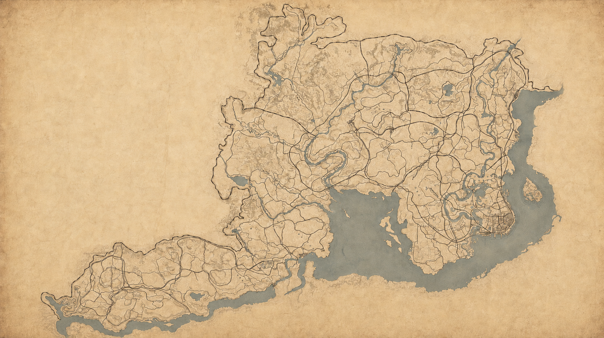

Lejrstatus
VENTER PÅ AFGANG
- Tid
- —
- Kapitel
- Prolog
- Mission
- Ikke begyndt
- Fremdrift
- 0%
- Lejr
- —
- Fast travels
- 0
- Dødsfald
- 0
Opdateret ukendt
Marcelo præsenterer · 10. august 2026 kl. 14.00
Ét spil. Én stream.
Uret stopper først, når historien er slut.
Marcel spiller hele historien i én sammenhængende stream, der kører døgnet rundt — også under måltider, pauser og søvn. Ingen donation kan forlænge det.
Tid til vi rider ud
Én sammenhængende stream. Estimeret syv dage. Live døgnet rundt. Uret kan ikke købes længere.
Natlejren
Den er slukket her, indtil du selv tænder for den.
— Du holder vagt ved bålet.
Skal vi sige til, når han vågner?
Streamen kører videre hele natten. Der sker bare ikke så meget.
Rejsen er slut
Uret stoppede efter —
I har doneret 0 kr.
Det har forlænget uret med 0 sekunder.
Pengene går ubeskåret til .
Læs om indsamlingen ↗Vær med fra første skud
Kanalen er stille indtil den 10. august. Sørg for, at du får besked, når vi rider ud.
Det vilde vestens kodeks
Skal vi nogen steder, kommer hesten med. Tælleren står i lejrstatus.
Dusører, navne og dagens dom afgøres af jer. Opslagstavlen åbner, når vi rider ud.
Pauser, måltider og søvn er en del af rejsen. Stream og elapsed-timer kører døgnet rundt.
Hvornår stopper uret?
Uret stopper, når rulleteksterne ruller efter epilogens sidste mission, “American Venom”. Ikke før. Ikke efter.
Sidemissioner, samleobjekter og 100 % completion tæller ikke med — og trækker heller ikke fra. Opstår der tvivl, afgør produktionen det live på stream, og den afgørelse er endelig.
The Living Frontier
Seks genstande. Seks veje ind i lejren.
Direkte fra lejren
Slå dig ned ved bålet. Chatten følger rejsen, mens Marcel spiller historien fra start til slut.
Lejrstatus
Opdateret ukendt
Bandens hest
Uden navn endnuDin rejse
Gemmes kun på din egen enhed. Vi ser det aldrig.Direkte fra spilverdenen
0 af 9 ankre

Det første flag sættes, når Marcel rider ud.
Vælg en markør for at se hvornår banden var der.
Flaget flyttes i hånden, når banden faktisk er ankommet — kortet løber aldrig foran streamen. Med spoilerfri slået til vises kun de steder, I allerede har set.
168 timer
Stiplede markeringer er gæt, ikke aftaler. Marcel bestemmer selv tempo, pauser og søvn — linjen er vores bedste bud, indtil noget faktisk er sket. Udfyldte markeringer er hændelser, vi har set. Prikkerne er dine egne besøg.
Gæster på vej
AFGANG 10. AUGUST · 14:00
✦VARIGHED CIRKA 7 DAGE
✦DESTINATION TWITCH.TV/MARCELO
Chatten holder tøjlerne
Community foreslår udfordringer. Produktionen godkender. Marcel har intet valg. Send dit forslag via Journalen.
Opslagstavlen er tom indtil vi rider ud den 10. august.
Boot Hill
0 gange er det gået galt indtil videre. Hver enkelt har fået sin egen sten.
Ingen er døde endnu. Det holder næppe hele ugen.
Tryksværten er stadig våd
Hver morgen sætter vi en ny udgave af Frontier Gazette. Syv udgaver bliver til eventets bog.
Kommandobordet er åbnet. Vi gør klar til afgang.
Tidligere udgaver
Første udgave udkommer 11. august. Fra da af sætter vi en ny forside hver morgen, når Marcel vågner.
Skrevet mens støvet lægger sig
Eventets fælles hukommelse: klip, citater og små øjeblikke udvalgt af produktionen og communityet.
PRODUKTIONSNOTE
Kommandobordet er åbnet, kortet foldet ud, og de første sider venter på at blive skrevet.
“Ét spil. Én stream. Uret stopper først, når historien er slut.”
Den første officielle journal-side.
Disse bidrag kunne ikke sendes og ligger kun på denne enhed. Tryk “Send igen”, når du har forbindelse — eller slet dem.
Dagens dom
Honour Meter
— honour
Måleren åbner, når vi rider ud. Vi viser ikke tal, vi ikke har.Forudsigelser
Første forudsigelse åbner, når vi rider ud.
Undervejs
Hver gang noget sker for første gang, hænger det her. Ingen skal huske at skrive det ind — det kommer af sig selv fra lejrstatus.
Fremkaldes undervejs
Lejrjournalen
Et gaming-maraton, hvor Marcel spiller Red Dead Redemption II fra begyndelsen til gennemført historie inklusive epilogen i én sammenhængende stream.
Marcel er streameren. Kanalen hedder Marcelo — det er samme person. Du finder ham på twitch.tv/marcelo.
Nej. Abonnementer, donationer og gaveabonnementer tilføjer ikke ekstra tid. Uret kan ikke købes længere. Streamen slutter, når historien er spillet færdig.
Fordi pengene går videre, ikke fordi de køber tid. Er der en indsamling i gang, står målet på forsiden.
Mandag den 10. august 2026 kl. 14.00 dansk tid på twitch.tv/marcelo.
Vi regner med cirka syv dage. Det er et estimat — den faktiske varighed afhænger af gameplay, pauser, søvn og eventuelle tekniske problemer.
Uret stopper, når rulleteksterne ruller efter epilogens sidste mission, “American Venom”. Sidemissioner, samleobjekter og 100 % completion er ikke påkrævet.
Nej. Det officielle elapsed-time-ur fortsætter under pauser, måltider og søvnperioder.
Ja. Streamen kører døgnet rundt. Siden skifter til natlejr med bål, så du kan se hvor mange andre der er vågne, og hvornår han ventes op igen.
En udfordring fra jer. I foreslår, produktionen godkender, og så er den bindende. De aktive dusører står på opslagstavlen.
Tryk på “Radio” i menuen, så bliver siden til en gammel radio, du kan lade stå og køre i baggrunden. Tryk Escape eller “Sluk radioen” for at komme tilbage.
Ja. Frivillige sidemissioner må gerne spilles, men er ikke nødvendige for at afslutte eventet.
Nej. Eventet spilles i en normal, umodificeret version af Red Dead Redemption II.
Ja. Den fulde VOD og redigerede highlights planlægges til YouTube. Kortere klip udgives på TikTok og muligvis som YouTube Shorts.
Slå Spoilerfri til i menuen, så skjuler vi alt fra kapitel 3 og frem — stednavne, programtitler og journalsider. Du kan altid trykke på en enkelt ting for at se den. Streamen og chatten kan naturligvis indeholde spoilers.
Brug “Indsend et øjeblik” i Journalen. Alt bliver læst af et menneske, før det udgives. Se community-reglerne.
Nej. Det er en uafhængig creatorproduktion og er ikke officielt sponsoreret, godkendt eller arrangeret af Rockstar Games eller Take-Two Interactive.
Ingen svar på “”. Prøv “spoiler”, “varighed” eller “YouTube” — eller spørg i chatten.
Tænd den, så kører lyden videre her.